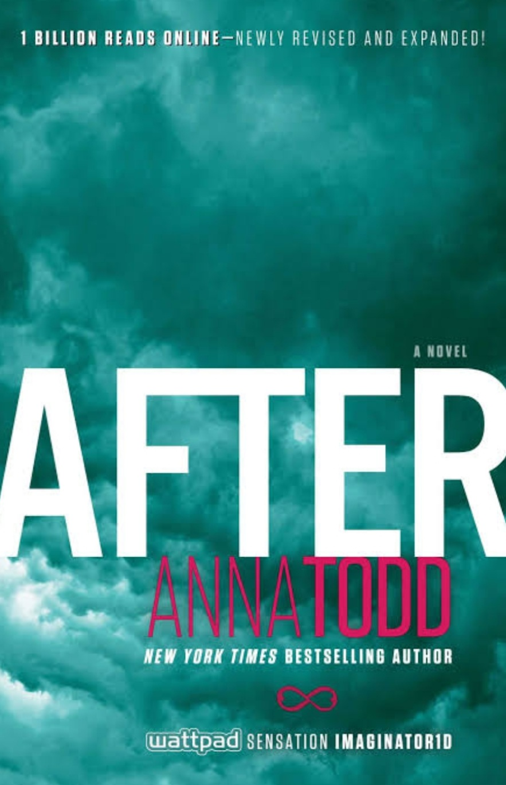

Romance
Five Feet Apart
Author: Rachael Lippincott
Length: 288 pages
Ratings:💛 💛 💛
”Everyone in this world is breathing borrowed air.”
I like Stella and Will's relationship. It was cute and innocent.
The writing style was easy and simple. I flow through it in one sitting.
I'm happy because of the ending.

After
Author: Anna Todd
Length: 608 pages
Ratings: 💛
“Whatever our souls are made of, his and mine are the same.”
This appears as a quote from After.
THIS. APPEARS. AS. A. QUOTE. FROM. AFTER.
I can't even. I just can't even. My fuck-o-meter exploded with this.
Emily Brontë would be choking herself to death if she were alive.
